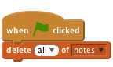
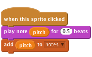
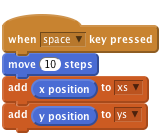

Frantic Felix - Record
Level 6
Get ready
Press Make a list to make a new list.

Try this code
Empty the list when you start.

Every time something happens, add it to the list.

If you want to record several things, use one list for each.

See the “Play back a sequence” card for how to replay what you’ve recorded.